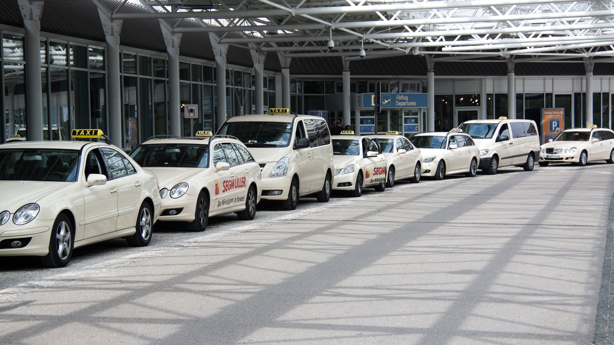

Locação no aeroporto x loja: como decidir o melhor custo total da diária

A decisao em uma frase
A escolha entre retirada no aeroporto ou na loja deve considerar custo total da missão, não apenas valor da diária.
A decisao em uma frase
A escolha entre retirada no aeroporto ou na loja deve considerar custo total da missão, não apenas valor da diária.
O que mudou no mercado
Com operações mais enxutas, empresas passaram a otimizar deslocamento porta a porta e não apenas tarifa isolada.
Quando esse tipo de decisao fica urgente
- A agenda começa imediatamente após o desembarque.
- Seu time viaja com frequência e precisa de processo padronizado.
- Existe sensibilidade alta a taxa de serviço versus custo de deslocamento adicional.
Criterios que devem mandar na escolha
- custo total da missao
- tempo improdutivo escondido
- risco operacional se o veiculo falhar
- complexidade interna para administrar a escolha
Como cada cenario responde melhor
Cenario 1: agenda critica saindo do aeroporto
A retirada no aeroporto tende a ganhar quando tempo de deslocamento vale mais do que a taxa adicional.
Cenario 2: viagem administrativa com folga de horario
A loja tende a ganhar quando ha margem para deslocamento externo sem risco para a agenda.
Cenario 3: operacao recorrente
O melhor modelo e o que vira politica padrao sem gerar excecao toda semana.
Metodo de decisao
- Calcule custo total por cenário: diária + taxas + deslocamento + tempo improdutivo.
- Defina regra por tipo de viagem: curta crítica, rotina administrativa ou visita comercial.
- Padronize escolha no booking interno para evitar decisões ad hoc.
- Negocie condição específica para frequência recorrente.
- Revise resultado por viagem após 60 dias de operação.
Onde a maioria erra
- Comparar somente o preço inicial sem incluir taxa e tempo.
- Manter uma única regra para todas as viagens.
- Não capturar dados pós-viagem para refinar decisão.
A nuance que evita decisao ruim
Preco inicial e um numero facil de comparar, mas custo total e um numero mais verdadeiro. A decisao certa quase sempre exige olhar os dois.
FAQ
Aeroporto sempre sai mais caro?
Nem sempre. Em viagens críticas, o ganho de tempo pode compensar a taxa adicional.
Quando a loja tende a ser melhor?
Quando há flexibilidade de horário e deslocamento sem impacto na agenda.
Como padronizar decisão?
Com política de viagem baseada em tipo de missão e janela de compromisso.
Conclusao
Implemente um comparativo padrão de custo total por viagem e elimine decisões por achismo.